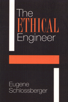

An "ethics construction kit" places engineering in a new light
An "ethics construction kit" places engineering in a new light


 An "ethics construction kit" places engineering in a new light
An "ethics construction kit" places engineering in a new light

|  |
The Ethical EngineerAn "Ethics Construction Kit" Places Engineering in a New LightEugene Schlossbergerpaper EAN: 978-1-56639-057-6 (ISBN: 1-56639-057-5) |
"As engineers undertake to mobilize people and resources to effect change, they will encounter a growing need to understand the social values that drive their decisions as well as the ethical consequences of those decisions. Books like The Ethical Engineer can greatly assist in this process. The Ethical Engineer is a good book at the right time."
—Frederick C. Nelson, Dean of Engineering, Tufts University
On occasion, professionals need to use moral reasoning as well as engineering skills to function effectively in their occupation. Eugene Schlossberger has created a practical guide to ethical decision-making for engineers, students, and workers in business and industry.
The Ethical Engineer sets out the tools and materials essential to dealing with whistle-blowing, environmental and safety concerns, bidding, confidentiality, conflict of interest, sales ethics, advertising, employer-employee relations, when to fight a battle, and when to break the rules.
The author offers recommendations and techniques as well as rules, principles, and values that can guide the reader. Lively examples, engaging anecdotes, witty comments, and well-reasoned analysis prove his conviction that "ethics is good business."
Excerpt available at www.temple.edu/tempress
"The Ethical Engineer is likely to make a very important contribution to the ethical development and eventually, the ethical practice, of the next generation of American engineers. It is an important, useful, and well-executed text. One outstanding feature is that its discussions are well targeted to help students care about ethics and the significance ethics has for their lives. The coverage is excellent: relevant cases and issues from the business ethics literature are nicely integrated into the text."
—Professor David James, Department of Philosophy, Old Dominion University
Part I: Introduction
1. The Nature of Engineering Ethics
What This Book Is About •
Why Ethics for Engineers? •
A Revealing Case •
Cut-Throat versus Community Workplaces •
The Consumer Life versus the Life of Values •
What Should I Do?
2. Ethical Decision Making
The Nature of Ethical Decision Making •
How to Use This Book •
A Template for Moral Decision Making
Part II: Sources of Ethical Decision Making
3. Values of the Engineering Profession
Safety •
Extent of a Risk •
Balancing Risks against Benefits •
Nature of Risks •
Publicizing Risks •
Human Progress •
Clean, Clear Decision Making •
Community •
Partnership with Nature •
Environmental Awareness •
Environmental Considerations
4. Additional Ethical Sources
When to Fight a Battle •
Treating Others Fairly and Well •
The Duty to Leave the World No Worse •
Respect for Persons •
Rights •
Autonomy •
Principles of Accountability •
Institutional Duties •
Models of the Professions •
Promoting Good Consequences •
Universality •
Moral Precedents •
The Golden Rule •
Personal Values and the Good Life •
When to Break the Rules
Part III: Problems and Issues in Engineering
5. Honesty and Professionalism
Whistleblowing •
Competence •
The Role of Professional Societies •
Keeping Accurate Records and Obeying the Law •
Consulting versus Adversarial Sales
6. Good Faith
Conflict of Interest •
Confidentiality and Trade Secrets •
Patents and Copyrights •
Bidding
7. Employee-Employer Relations
Types of Work Relationships •
Leadership and Healthy Work Environments •
Protégés •
Dealing with Subordinates •
Friendship, Favoritism, and Professional Relations •
Harassment •
Hiring Practices •
Interdepartmental Dealings and Hiring away from Another Firm
8. Special Issues in Consulting Engineering
Advertising •
Dishonest or Misleading Advertising •
Unseemly or Demeaning Advertising •
Competing with Other Firms •
Competitive Bidding •
Contingency Fees •
Bribes and Kickbacks •
Derogatory Remarks about Other Engineers •
Reviewing the Work of Others •
Reviewing the Work of Unlicensed Individuals •
Reviewing the Work of Other Engineers •
Safety and Liability
Appendix 1: Two Sample Suggestions
Formation of an Environmental and Community Issues Advisory Board •
Ethical Ombudsperson
Appendix 2: Summary of Key Points
Notes
List of Cases
Index
Eugene Schlossberger is Assistant Professor in the Department of English and Philosophy at Purdue University at Calumet. He is also the author of Moral Responsibility and Persons (Temple).
© 2015 Temple University. All Rights Reserved. This page: http://www.temple.edu/tempress/titles/924_reg.html.